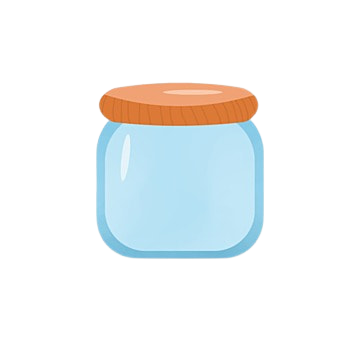

TAYAL CULTURE
Zhu Zhu is a traditional cooking method used by Atayal people,
where rice is cooked inside bamboo tubes.
After the rice has been soaked in water for eight hours,
it is stuffed inside the tubes,
which are then sealed with ginger leaves.
After the bamboo tubes have been steamed or boiled,
the rice is very fragrant and
has the scent of the ginger leaves.  【Tmmyan】
In traditional Atayal life,
no electricity meant no refrigerators could be used
to preserve foods which would typically spoil.
Atayal people instead used salt to preserve meat
and fish in a method called Tmmyan.
The meat would be cut into small chunks
and covered in salt before a layer was placed in a jar,
with a layer of half-boiled rice added on top.
These layers were repeated until the jar was full,
and sealed for at least one month.
Once opened the meat would remain safe to eat for half a year.